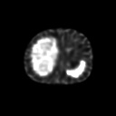
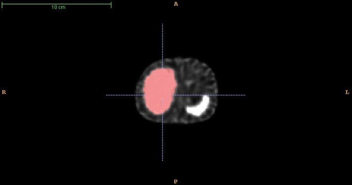
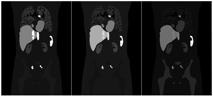
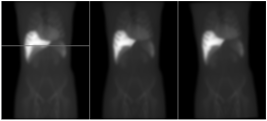
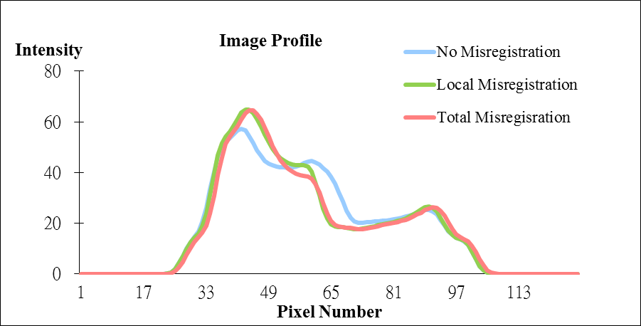
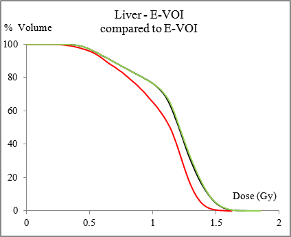
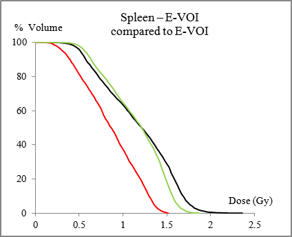
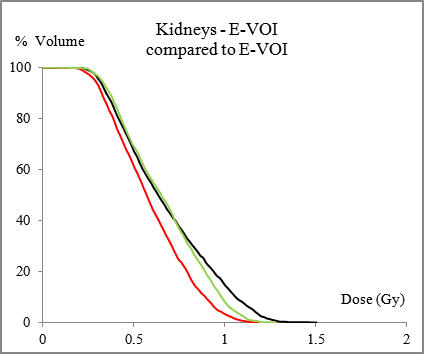
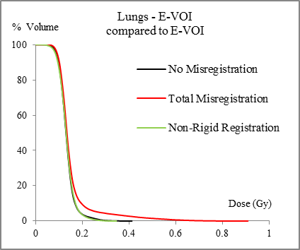

Improved 3D Targeted Radionuclide Therapy Dosimetry Using Organ-based Non-rigid Image Registration
We proposed an organ-by-organ based non-rigid registration method for serial quantitative SPECT(QSPECT) images to improve the 3D Targeted Radionuclide Therapy (TRT) dosimetry. Semi-automatic or manual segmentation was performed for the organs-of-interest directly on the QSPECT images or CT images at different time points (Figure 1). The segmented organs were registered to the organ images at the reference time point, i.e., ~24 hr, individually using affine plus B-spline registration. After registration, the organ images were integrated voxel-by-voxel to generate the cumulative activity images. Finally, these images were convoluted with a dose point kernel to generate the final dose images.
In the simulation study, a population of phantoms based on the 4D Extended Cardiac Torso (XCAT) phantom was used. This population was comprised of 3 In-111 Zevalin biokinetics models based on patient studies and 3 anatomical variations (Figure. 2). Individual organ and whole-body deformation between scans were modeled by rotating and translating organs and the whole body by up to 5˚ or voxels and up to a 5% increase or decrease in organ volume (Figure 3). An analytical projector was used to generate realistic noisy projections for a medium energy general purpose collimator. Projections were reconstructed using OS-EM algorithm with geometric collimator detector response, attenuation and scatter corrections.
After non-rigid registration, the mean differences in organ doses compared to the case without misalignment were decreased from (-17.3±5.98)% to (-1.55±2.35)% and (-11.3±2.67)% to (-1.79±2.56)% for the spleen and liver, respectively. For all organs, cumulative dose volume histograms (CDVHs) showed substantial improvement after registration (Figure 4). These results demonstrated that individual organ non-rigid registration of sequential QSPECT images is feasible for TRT and has the potential to improve the accuracy of 3D dosimetry.
|  |  | |
| Reconstructed QSPECT image | Segmentation for liver | |
| Figure 1. Segmentation for individual organ | ||
|  | ||
| Figure 2. Sampled coronal slice of the In-111 Zevalin activity maps of XCAT phantoms |
|  | |||
| (a) | (b) | (c) | |
|  | |||
| (d) | |||
| Figure 3. Sampled noise-free projection of Phantom #1C at 72-hr time point for (a) without, (b) with local and (c) with total misregistration. The yellow line indicates the position of the image profile which is shown in (d). | |||
|  |  |
| (a) | (b) |
|  |  |
| (c) | (d) |
| Figure 4 Sampled CDVHs of (a) liver, (b) spleen, (c) kidneys and (d) lungs | |